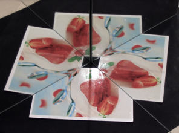
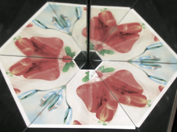

ماذا يحدث حين تنعكس مرآة في مرآة أخرى؟ تُظهر المحاكاة على اليمين مرآتين هندسيتين. بالإمكان التحكم بالزاوية بين المرآتين بواسطة مؤشر التمرير أدناه. يتم عكس الجسم بأكمله مراراً وتكراراً.
للزاوية بين المرآتين تأثير كبير على النتيجة. حين تكون الزاوية قاسماً للدرجة 180، وفي هذه الحالة فقط، تتطابق الصور المتكررة الناتجة عن إنعكاسات في المرآتين. هذا ما يحدث لقواسم 180 درجة، اي 90 درجة و60 درجة و45 درجة و36 درجة و30 درجة، إلى آخره....
|   |
|
|
صور معكوسة من مرآتين حقيقيتين في حالة زاوية 90 درجة و45 درجة و36 درجة.